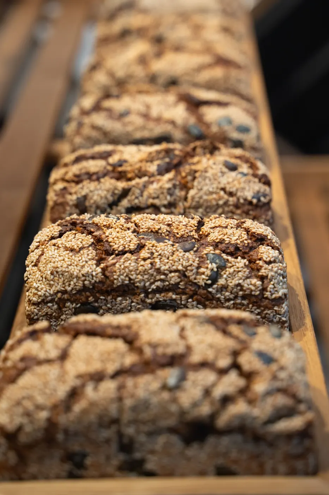
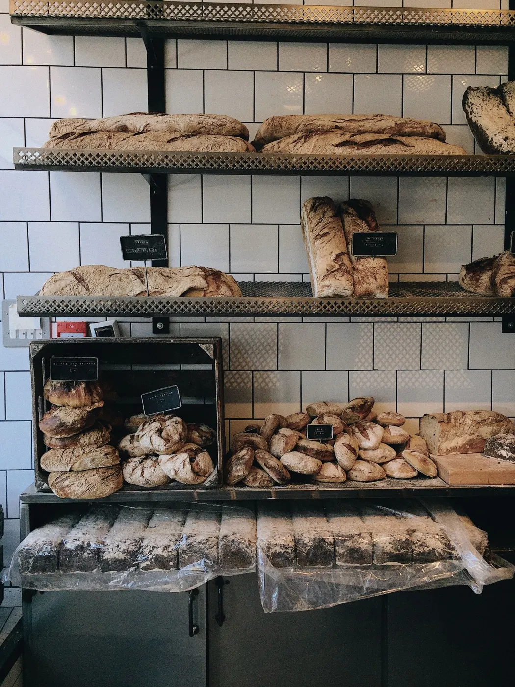
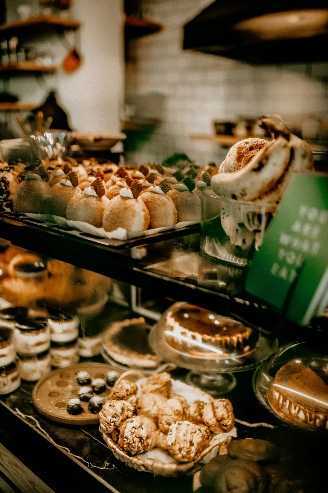

Panadería en Lambaré, sobre Félix Pérez Cardozo; abierta también el domingo a la mañana.

35 reseñas en Google
| Lunes | 7:00–20:00 |
|---|---|
| Martes | 7:00–20:00 |
| Miércoles | 7:00–20:00 |
| Jueves | 7:00–20:00 |
| Viernes | 7:00–20:00 |
| Sábado | 7:00–20:00 |
| Domingo | 8:00–13:00 |
Horario según la ficha pública; conviene confirmarlo por teléfono.
Las reseñas destacan las rosquitas con queso, los palitos y las pastafrolas, además de la buena atención. 35 reseñas con un promedio de 4,7.
Resumen neutral de reseñas públicas de Google Maps. Sin citas textuales.

